Ecuador es un país de volcanes. Aunque algunos parecen gigantes dormidos, de vez en cuando despiertan y ponen en alerta a las poblaciones locales. Muestra de ello son las recientes erupciones del Sierra Negra (Galápagos) y Reventador (entre Napo y Sucumbíos).
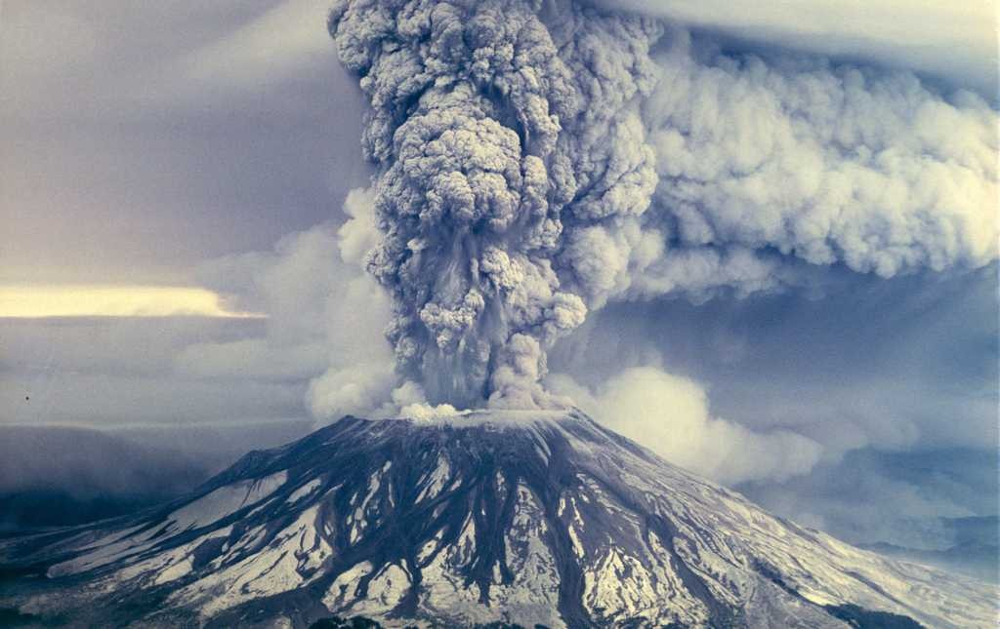
1Volcan Tungurahua
Activar el teclado para el contenido multimedia
El volcán Tungurahua es un estrato-volcán andesítico compuesto, se encuentra ubicado en la Cordillera Real del Ecuador a 120 km al sur de Quito, 33 km al SE de Ambato y tan sólo a 8 km al Norte de la ciudad de Baños.
2Volcan Chinborazo
El volcan mas alto del mundo
3Volcan Cotopaxi
El Cotopaxi es también uno de los volcanes más vigilados del Ecuador y al cual se dedican una gran parte de los recursos disponibles para el monitoreo. De hecho, la primera estación sísmica permanente dedicada a vigilar un volcán en Sudamérica fue instalada en el Cotopaxi, en 1976.
GALERIA DE LOS VOLCANES MAS LINDOS DEL ECUADOR
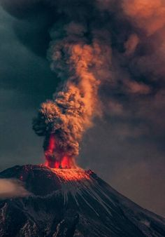
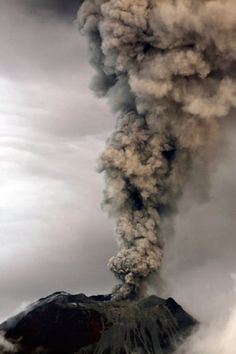
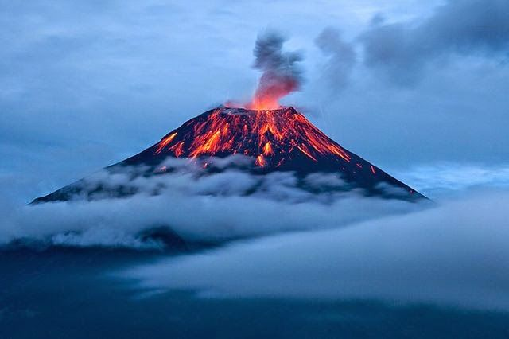
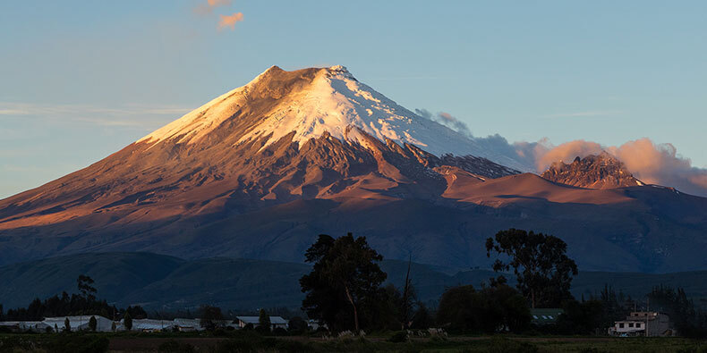
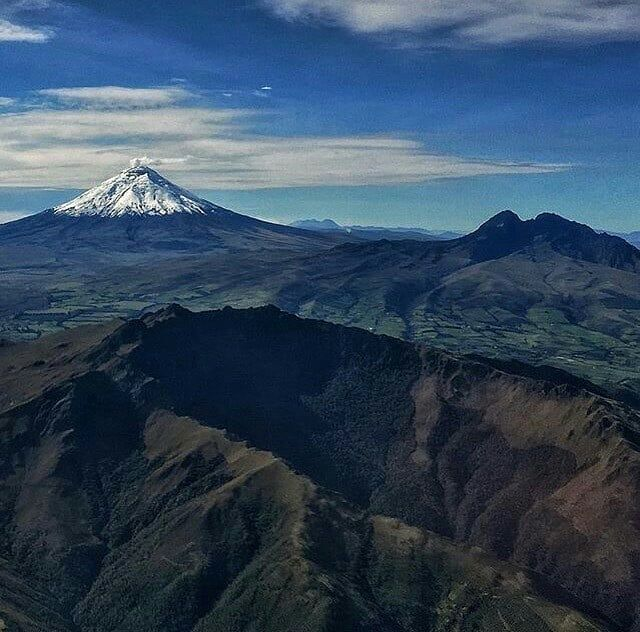
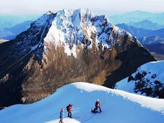


EL VOLCAN MAS ALTO DEL MUNDO
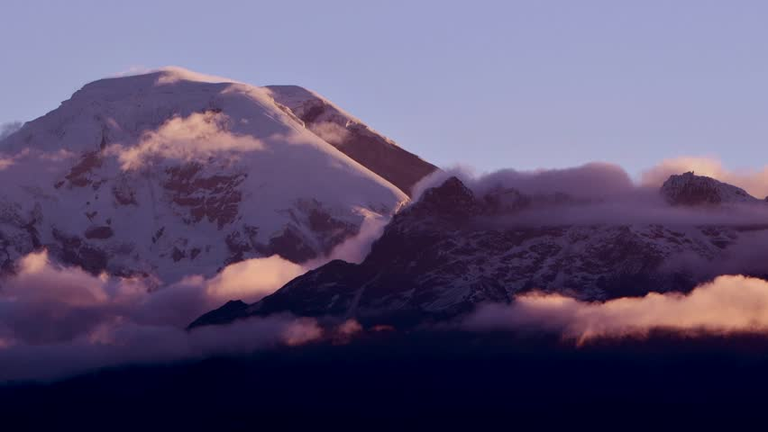
EL PODER DE LA NATURALEZA
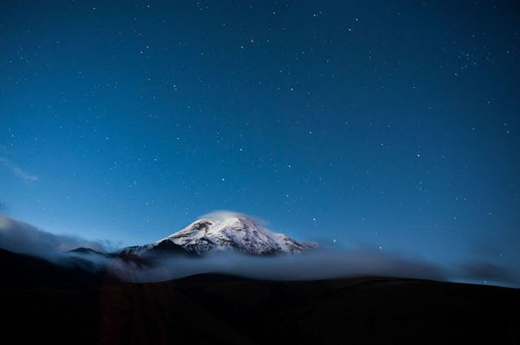
BELLEZA EN TODO SU ESPLENDOR
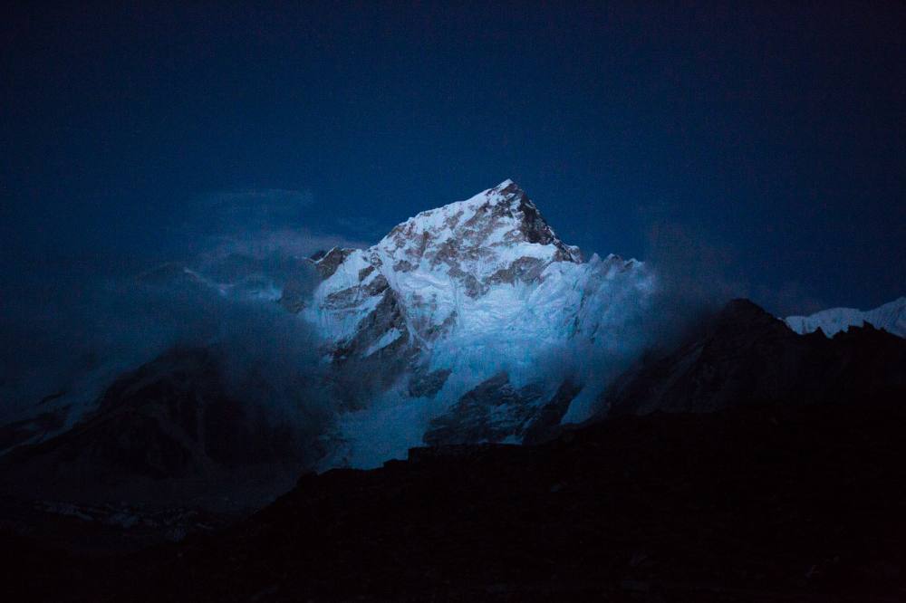
LO MAS LINDO DE MI ECUADOR
1Volcan Tungurahua
Activar el teclado para el contenido multimedia El volcán Tungurahua es un estrato-volcán andesítico compuesto, se encuentra ubicado en la Cordillera Real del Ecuador a 120 km al sur de Quito, 33 km al SE de Ambato y tan sólo a 8 km al Norte de la ciudad de Baños.
2Volcan Chinborazo
El volcan mas alto del mundo
3Volcan Cotopaxi
El Cotopaxi es también uno de los volcanes más vigilados del Ecuador y al cual se dedican una gran parte de los recursos disponibles para el monitoreo. De hecho, la primera estación sísmica permanente dedicada a vigilar un volcán en Sudamérica fue instalada en el Cotopaxi, en 1976.
GALERIA DE LOS VOLCANES MAS LINDOS DEL ECUADOR
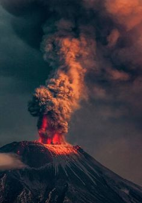
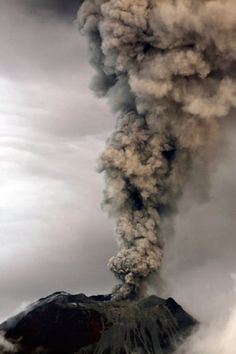
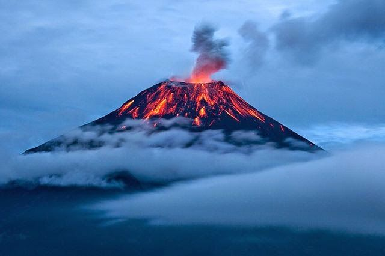
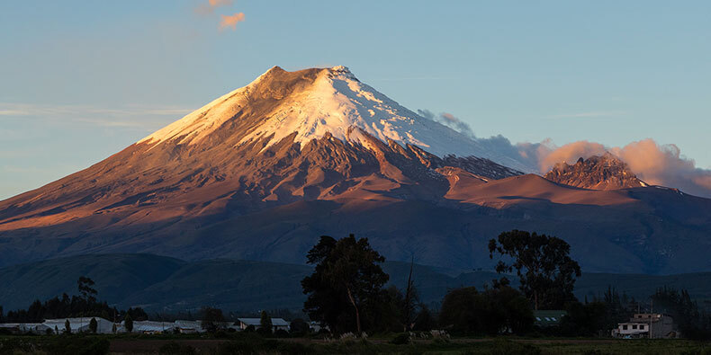
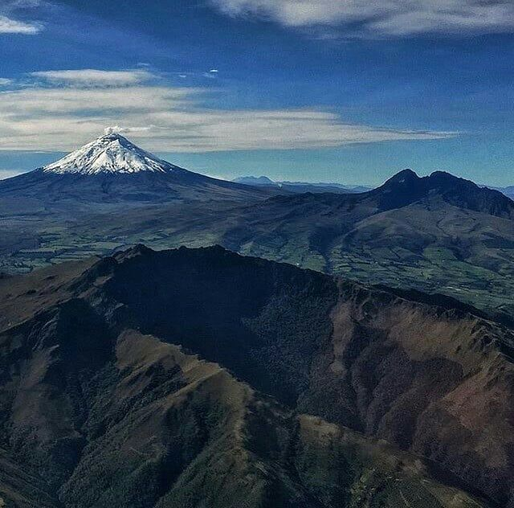
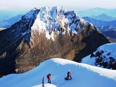
EL VOLCAN MAS ALTO DEL MUNDO
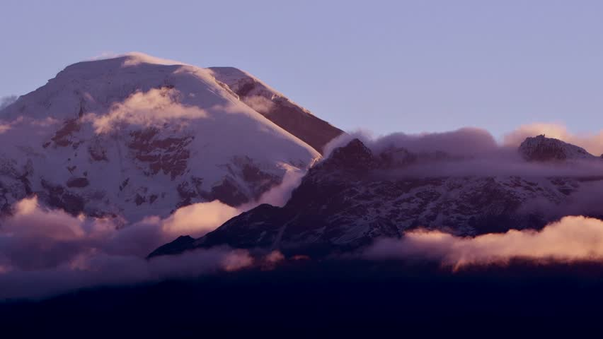
EL PODER DE LA NATURALEZA
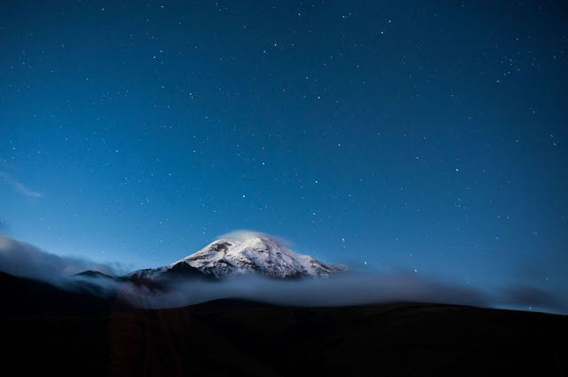
BELLEZA EN TODO SU ESPLENDOR
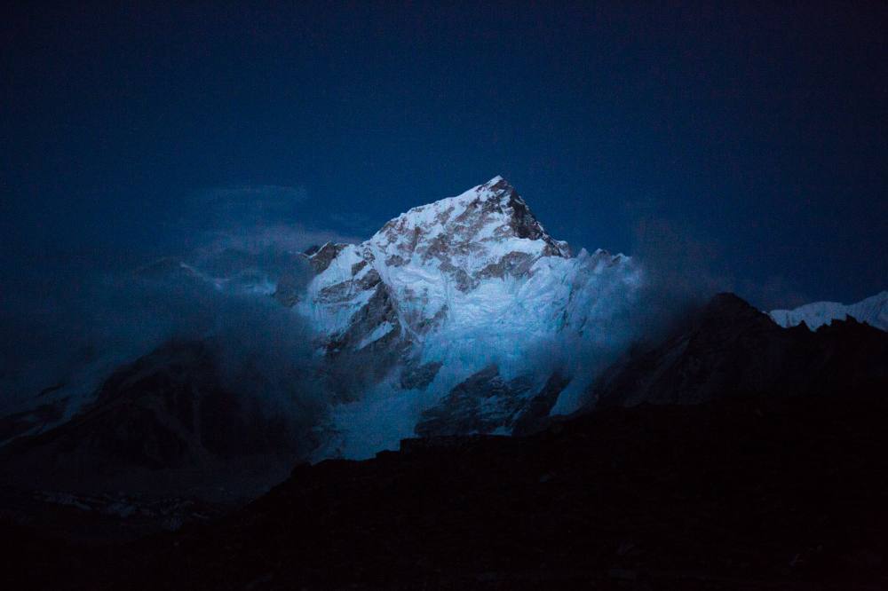